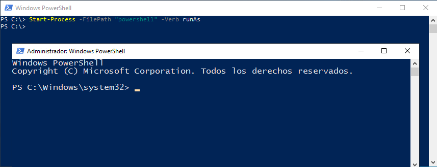
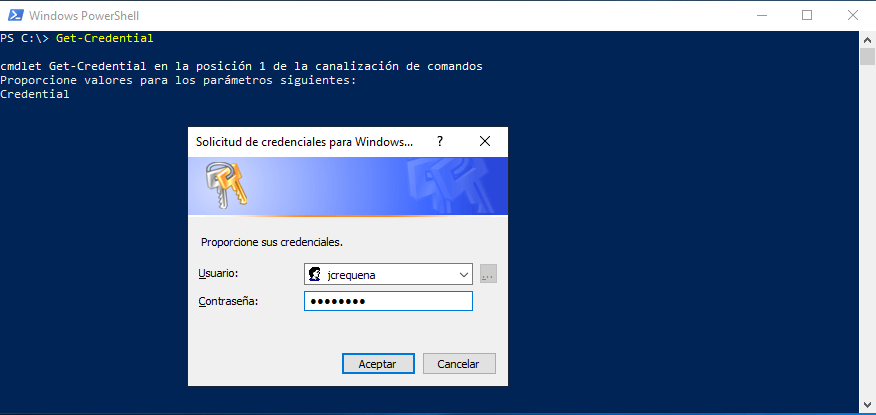
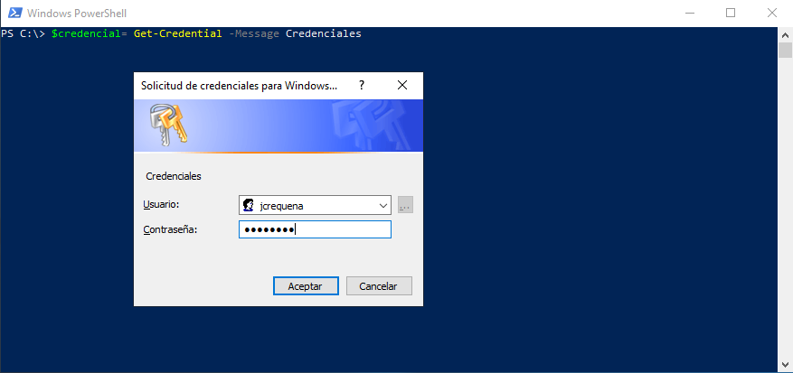
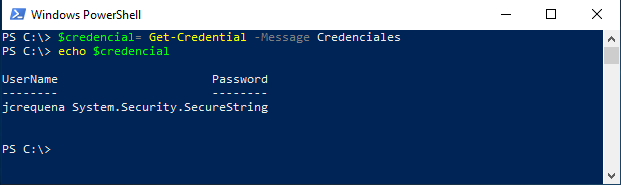
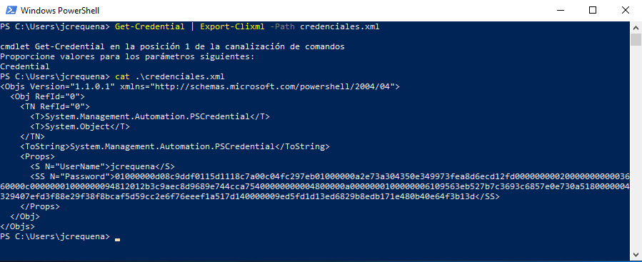
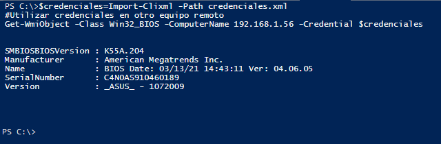

Tarea 10. Ejecutar como
1. Introducción
Iniciar sesión con credenciales de administrador puede suponer un riesgo para la seguridad del sistema operativo y de la red (en el caso de que el ordenador forme parte). El riesgo se debe a que los usuarios administradores pueden realizar cualquier tipo de cambio en el sistema y puede darse el caso de que el administrador ejecute un programa dañino para el sistema como, por ejemplo, un virus, por este motivo, es recomendable iniciar sesión con usuarios no administradores.
En PowerShell se pueden ejecutar cmdlets como administrador mediante el parámetro -Verb y el valor runAs.
2. Ejemplos de ejecución de comandos con crdenciales bajo demanda
Realizar los siguientes puntos en el servidor de vuestro proyecto.
1. Iniciar Powershell como Administrador
PS C:\> Start-Process -FilePath "powershell" -Verb runAs

Figura 1. Terminal powershell con credenciales de administrador.
También se pueden ejecutar los cmdlet con los credenciales de otros usuarios con el cmdlet:
PS C:\> Get-Credential

Figura 2. Acceder con las credenciales de un usuario.
Las credenciales de un usuario se pueden almacenar en una variable para poder utilizarlas dentro de un script.
PS C:\> $credencial= Get-Credential -Message Credenciales

Figura 3. Obtener las credenciales de un usuario en una variable.

Figura 4. Imprimir por pantalla la variable.
También se puede almacenar la credencial en un fichero xml, para ello, hay que utilizar el cmdlet siguiente:
PS C:\> Get-Credential | Export-Clixml -Path credenciales.xml

Figura 5. Guardar las credenciales en un fichero xml.
Una vez se tienen las credenciales guardadas en el fichero, se pueden utilizar para ejecutar comandos:
PS C:\> $credenciales=Import-Clixml -Path credenciales.xml
#Utilizamos las credenciales en otro equipo remoto
PS C:\> Get-WmiObject -Class Win32_BIOS -ComputerName 192.168.1.2 -Credential $credenciales

Figura 6. Imprimir datos de la BIOS con las credenciales de un equipo remoto.
A continuación, se va a obtener la información de la BIOS mediante las credenciales de Administrador.
PS C:\> $credencial=Get-Credential
PS C:\> (Get-WmiObject Win32_BIOS -ComputerName('localhost') -Credential $credenciales).Version
3. Trabajo a realizar
- Ejecuta una serie de comandos a partir de las credenciales del administrador que estén referidos a funcionalidades críticas del mismo, ejemplo: lista de procesos, etc.
- Almacena varias credenciales en un fichero xml y utiliza las mismas para arrancar un proceso (powershell), ejemplo: Notepad, Calc, etc. Ayuda. Cmd-lets a utilizar:
- Export-Clixml.
- Start-Process.
Guardamos 2 credenciales y ejecutamos el notepad con las credenciales del usuario 2.
[PSCustomObject]@{
user1 = Get-Credential -Message Usuario 1
user2 = Get-Credential -Message Usuario 2
} | Export-Clixml -Path almacen.xml
Start-Process notepad -Credential (Import-Clixml .\almacen.xml).user2
Obra publicada con Licencia Creative Commons Reconocimiento No comercial Compartir igual 4.0